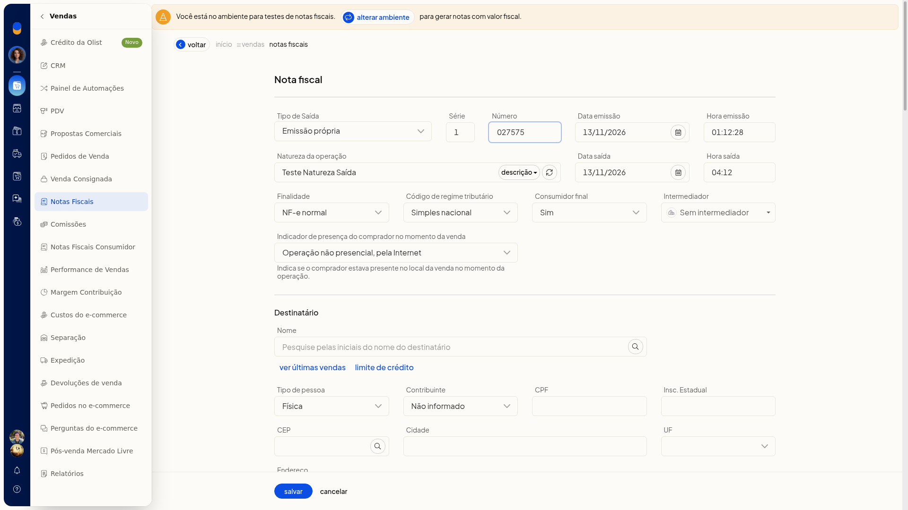
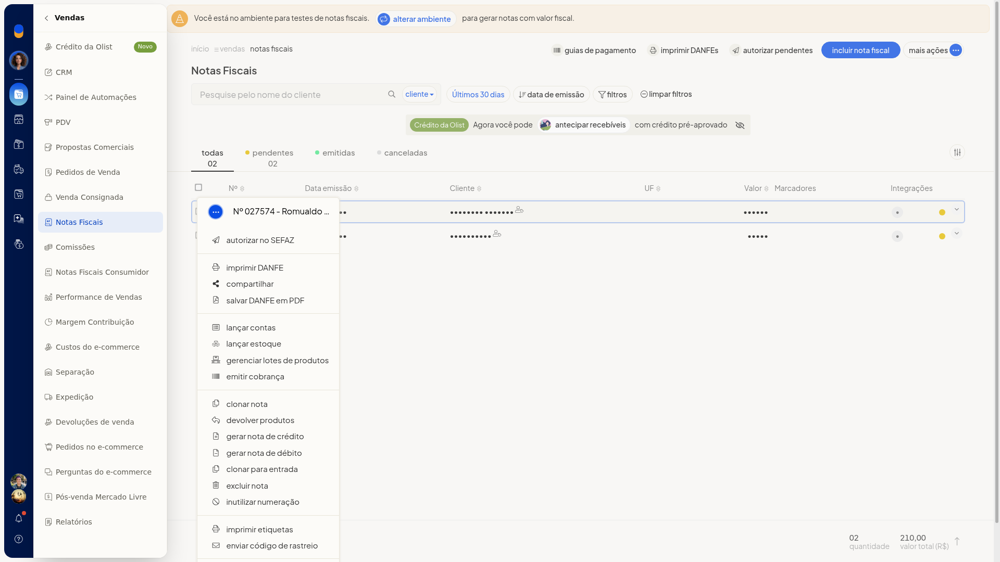

Tipos de documentos fiscais do ERP
No ERP da Olist, o tipo do documento fiscal é escolhido no formulário da nota, em Vendas > Notas Fiscais. Com Tipo de Saída e Finalidade, você indica a origem da emissão e o objetivo da nota.
Instruções
-
Acesse Vendas > Notas Fiscais.
-
Clique em Incluir nota fiscal. O formulário abre com Tipo de Saída em Emissão própria e Finalidade em NF-e normal.

-
Em Tipo de Saída, selecione uma opção:
- Emissão própria
- Exportação
- Emitida por terceiros
- XML de NFe
- Em Finalidade, selecione uma opção. O formulário permanece aberto para você continuar o preenchimento da nota.
- NF-e normal
- NF-e complementar
- NF-e de ajuste
- Devolução
- Nota de débito
- NFe com cupom referenciado
- NFe com chave de acesso referenciada
- NF-e normal - pagamento antecipado
Informações adicionais
Outros documentos no pedido e na nota
No menu ••• do pedido de venda, além de Gerar nota fiscal, aparecem Gerar NFC-e e Gerar nota de serviço.

No menu ••• da nota, aparecem Gerar nota de crédito e Gerar nota de débito.
